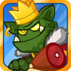

Dungelot游戏体验

目标
关卡模式，在每一关找到钥匙打开门进入下一关，一关一关让自己变得更强，走的更远。
规则
游戏由5*6的格子组成地图，玩家点击每个格子，可能翻出怪物、道具、装备和NPC。再通过点击可与怪物进行交战，或者拾取道具、装备，或者触发NPC功能。
战斗模式为，点击怪物一次，怪物会默认先攻击一下，角色承受一次攻击然后自己发动一次攻击。基于这样的战斗模式衍生出了很多相关的道具和装备。先说道具，比如冰冻小怪3回合的道具，可以保证玩家3回合的攻击，小怪不还手。比如先手3次的道具，保证3回合内都是角色先出手攻击，那么在角色攻击力大于小怪的时候会很好用。再比如让小怪中毒3回合，每回合额定掉X血量的道具，也结合了回合的战斗方式。再说装备，比如攻击道具，有3回合暴击一次的捡，5回合必触发晕眩的锤子，8回合必杀一次的斧头。
同时游戏翻格子的操作方式也衍生出了一些技能，装备效果，比如翻出小怪则即时打出一点伤害的装备，在小怪hp为1时很好用，小怪被翻出来就死了，比如某角色，在怪物出现时概率性让小怪中毒，这样的技能也很好的结合了翻格子的操作方式。
游戏过程中，要找到钥匙来打开门进入到下一关，钥匙可能是在杀死一只小怪之后掉落，也可能是翻开某个格子就出现，所以玩家希望翻开所有的格子，而伴随着小怪的出现，小怪会把周围8个方向的相邻的格子锁着，玩家将不能继续翻开未开的格子，最后不得不通过战斗杀掉小怪来解锁格子并继续前行，这里便出现了冲突，让玩家在每次操作的时候会有期待或者是不如意，同时结合这个机制，又有一种移动小怪到随机一个空格子去的道具，这样凭运气解决小怪锁格子的矛盾。除了找钥匙之外，还有别的吸引力去让我翻格子么？有的，翻开格子可能获得道具，装备，都是提升自己实力的，可以让自己杀怪变得更容易，让自己的hp值更高，让自己更有钱，来提升自己技能。所以在这个游戏里，可能你已经找到了钥匙，开了门，但是你仍不愿就这样进入下一关，你会希望继续翻开剩下的没有被锁的格子，去获得那些容易得到的道具，当然你应该不希望继续和小怪纠缠，浪费自己的hp了，在地图上只剩下怪和被锁着的格子的时候，也许你会愿意进入下一关了，这里仍然只是也许，因为如果你把地图上的所有小怪杀完的话，你会获得一大笔金钱，这个地方又会有一个冲突，让玩家衡量金钱和hp的得失。
还有一个比较有意思的冲突出现在当翻出了boss怪的时候，boss怪的血量和攻击都普遍要高点，甚至相较小怪要翻几倍，但是杀掉boss怪的奖励也更加丰厚一些，在后续关卡中能看到隐藏的地雷，或者是钥匙，让你能避免中招或者直奔目标，这种永久性的道具（或者说属性）是很受欢迎的，虽然消耗大，但是玩家心理还是喜欢得到一些一劳永逸的回报的，和这一点类似的就是，有一个dare模式的入口，在进入后，里面会有8只怪，同样打完了会得到丰厚的回报，增加攻击（永久增加攻击力），回复大量血量，得到金钱。所以虽然消耗大，但是能碰到这个入口都会选择进入。还有在某些关卡内会要求玩家做任务，解救3个人质，同样得翻开格子找，得看人品，那么最后的情况很可能是你得清光所有怪，但是在完成任务后能获得高额血量，金钱和永久增加的攻击力。
反馈
游戏在画风上略显阴暗，可能是因为地牢的环境缘故，角色设计上面也是欧美范，在大部分操作里都有反馈，但是反馈并不强烈，效果比较简单，而且在点击已经翻开的格子的时候并没有反馈。记忆比较深的是，在杀完关卡所有怪物后，会落下彩带并赠送大量金钱。